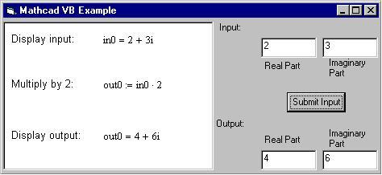

Visual Basic Example |
This example uses a simple Visual Basic 6.0 program and the Automation Embedding API to set the variable in0 in a Mathcad OLE object to a complex number, allow Mathcad to perform a calculation, and put the answer into a TextBox control.

On the left is the Mathcad Document object within an OLE Container control. It contains statements to show the input, perform a single calculation, and display the output. On the right are text boxes to provide input and view output from the Mathcad object. There is also a CommandButton control used to submit the input to Mathcad, recalculate, and extract the output to the output TextBox controls.
Private Sub cmdSubmit_Click()
Dim objMC As Object
Dim varInReal As Variant, varInImag As Variant
Dim varOutReal As Variant, varOutImag As Variant
'set a reference to the Mathcad object in the OLE container
Set objMC = OLE1.Object
'pass data to Mathcad worksheet via the SetComplex method
'getting inputs from the contents of the text boxes
'NOTE: normally you would validate inputs here prior to conversion from string values
varInReal = CDbl(txtInReal.Text)
varInImag = CDbl(txtInImag.Text)
Call objMC.SetComplex("in0", varInReal, varInImag)
'recalculate worksheet
Call objMC.Recalculate
'retrieve data from Mathcad using the GetComplex method
Call objMC.GetComplex("out0", varOutReal, varOutImag)
'assign outputs to text boxes
txtOutReal.Text = CStr(varOutReal)
txtOutImag.Text = CStr(varOutImag)
End Sub